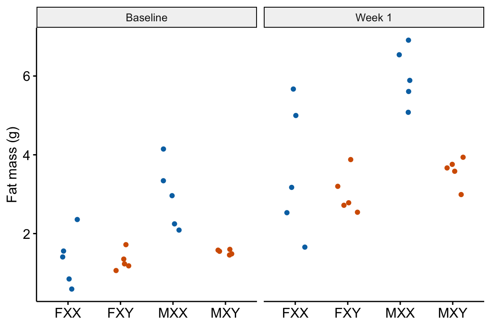

Chapter 13 Issues in inference
13.1 Comparing change from baseline
Figure 13.1: Serum DPP4 levels at baseline and 3 months in two groups. (A) The actual experiment: the two treatment levels are randomly allocated to treatment at baseline. We are interested in the effect of DMAB at 3 months and use the baseline measure to increase precision. (B) A thought experiment: the two treatment levels are different groups at baseline. We give DMAB to both groups at baseline to estimate the difference in response.
It is very common in a pre-post experiment, to measure a variable both before (\(pre\)) and after (\(post\)) some condition is applied and then the compare the change score (\(post - pre\)) between the groups using a \(t\)-test or one-way ANOVA (or a non-parametric equivalent such as Mann-Whitney-Wilcoxon). The linear model form of the t-test is
\[\begin{equation} post-pre = \beta_0 + \beta_1 treatment \end{equation}\]
This is often called the change score model. A similar analysis is a t-test or ANOVA using the percent change from baseline as the response:
\[\begin{equation} \frac{post-pre}{pre}*100 = \beta_0 + \beta_1 treatment \end{equation}\]
The best practice for how to estimate the treatment effect depends very much on when the treatment is applied relative to the baseline (\(pre\)) measure. Consider the two experiments in Figure 13.1
In 13.1A, the individuals are randomized into the “Placebo” and the “Denosumab” groups prior to the baseline measurement. Plasma DPP4 is measured at baseline and three months after treatment is initiated. The treatment is “Denosumab” and we want to compare this to “Placebo”
In 13.1B, the individuals are randomly sampled from two groups (wild type and knockout), DPP4 is measured at baseline without Denosumab and then both groups are given Denosumab and measured again three months later. The treatment is “knockout” and we want to compare this to “wild type” in the two different conditions.
The best practice for Design 2 is the change score model given above (or equivalents discussed below). The best practice for Design 1 is not the change score model but a linear model in which the baseline measure is added as a covariate.
\[\begin{equation} post = \beta_0 + \beta_1 treatment + \beta_2 baseline \end{equation}\]
This model is commonly known as the ANCOVA model (Analysis of Covariance) even if no ANOVA table is generated. The explanation for this best practice is given below, in the section regression to the mean. The ANCOVA linear model is common in clinical medicine and pharmacology, where researchers are frequently warned about regression to the mean from statisticians. By contrast, the ANCOVA linear model is rare in basic science experimental biology.
The analysis of linear models with added covariates is the focus of the chapter Linear models with added covariates. The analysis of pre-post experiments is covered in more detail in the chapter Linear models for longitudinal experiments – I. pre-post designs
Alert! If the individuals are sampled from the same population and treatment is randomized at baseline, do not test for a difference in means of the response variable at baseline and then use the ANCOVA linear model if \(p > 0.05\) and the change score model \(p < 0.05\). The decision of ANCOVA vs. change score is only a function of the expectation of the difference in means at baseline.
- If the individuals are sampled from the same population and treatment is randomized at baseline, the expected difference at baseline is zero. Use the ANCOVA linear model.
- If the individuals are sampled from the two populations because the treatment was applied prior to baseline, we cannot expect the difference at baseline to be zero (even if the treatment is magic). Use the change score model (or equivalents).
13.1.1 Example 1 (DPP4 fig4c)
The data in the left panel of Figure 13.1 are from an experiment to estimate the effect of Denosumab on the plasma levels of the enzyme DPP4 in humans. Denosumab is a monocolonal antibody that inhibits osteoclast maturation and survival. Osteoclasts secrete the enzyme DPP4.
13.1.1.1 For the ANCOVA linear model, the data need to be in wide format
In the ANCOVA linear model, the baseline measure is added as a covariate and thought of as a separate variable and not a “response”. This makes sense – how could it be a “response” to treatment when the treatment hasn’t been applied? This means the baseline and post-baseline measures of DPP4 have to be in separate columns of the data (Table 13.1.
| treatment | DPP4_baseline | DPP4_post | id |
|---|---|---|---|
| Denosumab | 436 | 405 | human_1 |
| Denosumab | 434 | 392 | human_2 |
| Denosumab | 534 | 480 | human_3 |
| Denosumab | 317 | 266 | human_4 |
| Denosumab | 440 | 397 | human_5 |
| Denosumab | 336 | 370 | human_6 |
13.1.1.3 Inference
The coefficient table
m1_coef <- cbind(coef(summary(m1)),
confint(m1))
m1_coef %>%
kable(digits = c(1,2,2,4,1,1)) %>%
kable_styling()| Estimate | Std. Error | t value | Pr(>|t|) | 2.5 % | 97.5 % | |
|---|---|---|---|---|---|---|
| (Intercept) | 56.9 | 24.21 | 2.35 | 0.0235 | 8.0 | 105.7 |
| treatment1 | 13.5 | 5.13 | 2.63 | 0.0117 | 3.2 | 23.8 |
| DPP4_baseline | 0.8 | 0.06 | 14.08 | 0.0000 | 0.7 | 0.9 |
Notes
- Here, we care only about the \(\texttt{treatmentDenosumab}\) row. This is the estimated effect of Denosumab on serum DPP4 adjusted for baseline (do not use the word “control” as the baseline values were not controlled in any manipulative sense).
- Chapter Linear models with added covariates explains the interpretation of these coefficients in more detail.
The emmeans table
m1_emm <- emmeans(m1, specs = "treatment")
m1_emm %>%
summary() %>%
kable(digits = c(1,2,2,0,1,1)) %>%
kable_styling()| treatment | emmean | SE | df | lower.CL | upper.CL |
|---|---|---|---|---|---|
| Placebo | 403.5 | 7.09 | 43 | 389.2 | 417.8 |
| Denosumab | 376.5 | 7.40 | 43 | 361.6 | 391.4 |
Notes
- The means are conditional on treatment and a value of \(\texttt{DPP4_baseline}\).
emmeansuses the grand mean of \(\texttt{DPP4_baseline}\) to compute the conditional means. The conditional means are adjusted for baseline DPP4. Note that these means are not equal to the sample means.
The contrast table
m1_pairs <- contrast(m1_emm,
method = "revpairwise") %>%
summary(infer = TRUE)
m1_pairs %>%
kable(digits = c(1,3,2,0,1,1,1,3)) %>%
kable_styling()| contrast | estimate | SE | df | lower.CL | upper.CL | t.ratio | p.value |
|---|---|---|---|---|---|---|---|
| Denosumab - Placebo | -27.003 | 10.25 | 43 | -47.7 | -6.3 | -2.6 | 0.012 |
Notes
- As in the coefficient table, the contrast is the estimated effect of Denosumab on serum DPP4. It is the difference in means adjusted (not controlled!) for baseline values.
ggplot_the_model(m1,
m1_emm,
m1_pairs,
y_label = "Serum DPP4 (ng/mL)",
effect_label = "Effect (ng/mL)",
palette = pal_okabe_ito_blue,
legend_position = "none")Figure 13.2: Estimated effect of Denosumab on serum DPP4 relative to placebo.
Notes
- The treatment means in Figure 13.2 are conditional means adjusted for the baseline measure and are, therefore, not equal to the sample means. The estimated effect is the difference between the conditional means and not the sample means and the inferential statistics (CI, p-value) are based on this difference between the conditional and not the sample means.
13.1.2 What if the data in example 1 were from from an experiment where the treatment was applied prior to the baseline measure?
13.1.2.1 Fit the change score model
m1 <- lm(DPP4_post - DPP4_baseline ~ genotype,
data = fig4c_fake)
m1_emm <- emmeans(m1, specs = "genotype")
m1_pairs <- contrast(m1_emm,
method = "revpairwise")
m1_pairs %>%
kable() %>%
kable_styling()| contrast | estimate | SE | df | t.ratio | p.value |
|---|---|---|---|---|---|
| ko - wt | -25.83333 | 11.53394 | 44 | -2.239766 | 0.0302079 |
Notes
- The change score is created on the LHS of the model formula. Alternatively, the change score could be created as a variable in the
fig4c_fakedata.table usingfig4c_fake[, change := DPP4_post - DPP4_baseline]. Making the change in the model formula shows the flexibility of the model formula method of fitting linear models in R.
13.1.2.2 Rethinking a change score as an interaction
If the treatment is randomized at baseline, a researcher should focus on the effect of treatment (the difference between the post-basline measures), adjusted for the baseline measures. The addition of the baseline variable as a covariate increases the precision of the treatment effects and the power of the significance test.
If the treatment is generated prior to baseline, a researcher should focus on the difference in the response to the condition, which is
\[\begin{equation} effect = (post_{ko} - pre_{ko}) - (post_{wt} - pre_{wt}) \end{equation}\]
This is the difference in change scores, which is a difference of differences. This difference of differences is the interaction effect between the genotype (“wt” or “ko”) and the time period of the measurement of DPP4 (baseline or post-baseline). The more usual way to estimate interaction effects is a linear model with two crossed factors, which is covered in more detail in the chapter # Linear models with two categorical X – Factorial designs (“two-way ANOVA”). The interaction effect (equal to the difference among the mean of the change scores) can be estimated with the model
\begin dpp4 = 0 + 1 genotype{ko} + 2 time{post} + 3 genotype{ko} time{post} \end
The R script for this looks like this
This model has two factors (\(\texttt{genotype}\) and \(\texttt{time}\)), each with two levels. The two levels of \(\texttt{time}\) are “pre” and “post”. \(genotype_{ko}\) is an indicator variable for “ko” and \(time_{post}\) is an indicator variable for “post”
Don’t fit this model – the data violate the independence assumption! This violation arises because \(\texttt{dpp4}\) is measured twice in each individual and both these measures are components of the response (both \(\texttt{dpp4}\) measures are stacked into a single column). This violation doesn’t arise in the ANCOVA linear model because the baseline measures are a covariate and not a response (remember that the independence assumption only applies to the response variable).
Alert! It is pretty common to see this model fit to pre-post and other longitudinal data. The consequence of the violation is invalid (too large) degrees of freedom for computing standard errors and p-values. This is a kind of pseudoreplication.
To model the correlated error due to the two measures per individual, we use a linear mixed model using \(\texttt{id}\) as the added random factor. Linear mixed models were introduced in the Violations of independence, homogeneity, or Normality chapter and are covered in more detail in the Models with random factors – Blocking and pseudoreplication chapter.
m2 <- lmer(dpp4 ~ genotype*time + (1|id),
data = fig4c_fake_long)
m2_emm <- emmeans(m2,
specs = c("genotype", "time"),
lmer.df = "Satterthwaite")
m2_ixn <- contrast(m2_emm,
interaction = "revpairwise")
m2_ixn %>%
kable() %>%
kable_styling()| genotype_revpairwise | time_revpairwise | estimate | SE | df | t.ratio | p.value |
|---|---|---|---|---|---|---|
| ko - wt | post - baseline | -25.83333 | 11.53393 | 44.00005 | -2.239769 | 0.0302077 |
Notes
- This is the same result as that for the change score score model.
- The interaction effect is one of the coefficients in the model but to get the same CIs as those in the change score model, we need to use Satterthwaite’s formula for the degrees of freedom. We pass this to the
emmeansfunction usinglmer.df = "Satterthwaite" - The interaction contrast is computed using the
contrastfunction but usinginteraction = "revpairwise"instead ofmethod = "revpairwise".
13.1.2.3 The linear mixed model estimates additional effects that we might want
While the linear mixed model and change score model give the same result for the effect of treatment in response to the different conditions, the linear mixed model estimates additional effects that may be of interest. I use a real example (Example 2) to demonstrate this.
13.1.3 Example 2
 The experiments in this paper were designed to measure the independent effects of the sex chromosome complement (X or y) and gonads on phenotypic variables related to fat storage, fat metabolism, and cardiovascular disease.
Response variable – \(\texttt{fat_mass}\). Fat mass was measured in each mouse at baseline (exposed to the standard chow diet) and after one week on a western diet.
Fixed factor – The design is two crossed factors (sex chromosome complement and gonad type) each with two levels but here I collapse the four treatment combinations into a single factor \(\texttt{treatment}\) with four levels: “female_xx”, “female_xy”, “male_xx”, “male_xy”. Male and female are not the typical sex that is merely observed but are constructed by the presence or absence of SRY on an autosome using the Four Core Genotype mouse model. SRY determines the gonad that develops (ovary or testis). Females do not have the autosome with SRY. Males do. Similarly, the chromosome complement is not observed but manipulated. In “xx”, neither chromosome has SRY as the natural condition because there are two X chromosomes. In “xy”, SRY has been removed from the Y chromosome.
Random factor \(\texttt{id}\). The identification of the individual mouse.
Planned comparisons
- “female_xy” - “female_xx” at baseline (chow diet)
- “male_xx” - “male_xy” at baseline (chow diet)
- “female_xy” - “female_xx” at one week (western diet)
- “male_xx” - “male_xy” at one week (western diet)
- the interaction contrast (3 - 1) which addresses, is the effect of the chromosome complement in females conditional on diet
- the interaction contrast (4 - 2) which addresses, is the effect of the chromosome complement in males conditional on diet
13.1.3.1 Fit the change score model
The change score model only estimates planned comparisons 5 and 6.
Inference from the change score model
m1_emm <- emmeans(m1, specs = "treatment")
m1_planned <- contrast(m1_emm,
method = "revpairwise",
adjust = "none") %>%
summary(infer = TRUE)
m1_planned[c(1, 6),] %>%
kable() %>%
kable_styling()| contrast | estimate | SE | df | lower.CL | upper.CL | t.ratio | p.value | |
|---|---|---|---|---|---|---|---|---|
| 1 | female_xy - female_xx | -0.536 | 0.4762289 | 16 | -1.54556 | 0.4735602 | -1.125509 | 0.2769737 |
| 6 | male_xy - male_xx | -0.996 | 0.4762289 | 16 | -2.00556 | 0.0135602 | -2.091431 | 0.0527970 |
13.1.3.2 Using the linear mixed model to compute all six planned comparisons
Notes
- important to add “Satterthwaite” argument
interaction contrasts
The interaction contrasts estimate planned comparisons 5 and 6.
m2_ixn <- contrast(m2_emm,
interaction = c("revpairwise"),
by = NULL,
adjust = "none") %>%
summary(infer = TRUE)
m2_planned_ixn <- m2_ixn[c(1,6), ] %>%
data.table()
m2_planned_ixn %>%
kable() %>%
kable_styling()| treatment_revpairwise | time_revpairwise | estimate | SE | df | lower.CL | upper.CL | t.ratio | p.value |
|---|---|---|---|---|---|---|---|---|
| female_xy - female_xx | week_1 - baseline | -0.536 | 0.4762289 | 16 | -1.54556 | 0.4735602 | -1.125509 | 0.2769737 |
| male_xy - male_xx | week_1 - baseline | -0.996 | 0.4762289 | 16 | -2.00556 | 0.0135602 | -2.091431 | 0.0527970 |
Simple effects
The simple effects estimate planned comparisons 1-4.
# get simple effects from model
m2_pairs <- contrast(m2_emm,
method = c("revpairwise"),
simple = "each",
combine = TRUE,
adjust = "none") %>%
summary(infer = TRUE)
# reduce to planned contrasts
m2_planned_simple <- m2_pairs[c(1,6,7,12),] %>%
data.table()
# clarify contrast
m2_planned_simple[, contrast := paste(time, contrast, sep = ": ")]
# dump first two cols
keep_cols <- names(m2_planned_simple)[-(1:2)]
m2_planned_simple <- m2_planned_simple[, .SD, .SDcols = keep_cols]
m2_planned_simple %>%
kable(digits = c(1,3,3,1,2,2,2,5)) %>%
kable_styling()| contrast | estimate | SE | df | lower.CL | upper.CL | t.ratio | p.value |
|---|---|---|---|---|---|---|---|
| baseline: female_xy - female_xx | -0.046 | 0.502 | 24.6 | -1.08 | 0.99 | -0.09 | 0.92766 |
| baseline: male_xy - male_xx | -1.422 | 0.502 | 24.6 | -2.46 | -0.39 | -2.84 | 0.00902 |
| week_1: female_xy - female_xx | -0.582 | 0.502 | 24.6 | -1.62 | 0.45 | -1.16 | 0.25701 |
| week_1: male_xy - male_xx | -2.418 | 0.502 | 24.6 | -3.45 | -1.38 | -4.82 | 0.00006 |
We can combine the six planned comparisons into a single table.
# create contrast table for ixns
m2_planned_ixn[, contrast := paste0("ixn: ", treatment_revpairwise)]
# dump first two cols
# dump first two cols
keep_cols <- names(m2_planned_ixn)[-(1:2)]
m2_planned_ixn <- m2_planned_ixn[, .SD, .SDcols = keep_cols]
# row bind -- smart enought to recognize column order
m2_planned <- rbind(m2_planned_simple,
m2_planned_ixn)
m2_planned %>%
kable(digits = c(1,2,2,1,2,2,2,5)) %>%
kable_styling()| contrast | estimate | SE | df | lower.CL | upper.CL | t.ratio | p.value |
|---|---|---|---|---|---|---|---|
| baseline: female_xy - female_xx | -0.05 | 0.50 | 24.6 | -1.08 | 0.99 | -0.09 | 0.92766 |
| baseline: male_xy - male_xx | -1.42 | 0.50 | 24.6 | -2.46 | -0.39 | -2.84 | 0.00902 |
| week_1: female_xy - female_xx | -0.58 | 0.50 | 24.6 | -1.62 | 0.45 | -1.16 | 0.25701 |
| week_1: male_xy - male_xx | -2.42 | 0.50 | 24.6 | -3.45 | -1.38 | -4.82 | 0.00006 |
| ixn: female_xy - female_xx | -0.54 | 0.48 | 16.0 | -1.55 | 0.47 | -1.13 | 0.27697 |
| ixn: male_xy - male_xx | -1.00 | 0.48 | 16.0 | -2.01 | 0.01 | -2.09 | 0.05280 |
13.1.4 Regression to the mean
13.2 Longitudinal designs
13.3 Glucose tolerance curves
13.4 Comparing responses normalized to a standard
13.5 Comparing ratios
- The ratio is a density (count per length/area/volume) or a rate (count/time).
- Example: number of marked cells per area of tissue.
- Best practice: GLM for count data with an offset in the model, where an offset is the denominator of the ratio.
- The ratio is relative to a standard (“normalized”). Example: expression of focal mRNA relative to expression of a standard mRNA that is thought not to be affected by treatment. Best practice: GLM for count data with an offset in the model, where an offset is the denominator of the ratio.
- The ratio is a proportion (or percent).
- Example: Number of marked cells per total number of cells.
- Best practice: GLM logistic.
- The ratio is relative to a whole and both the thing in the numerator and the thing in the denominator grow (allometric data).
- Example: adipose mass relative to total lean body mass.
- Best practice: ANCOVA linear model.
- Alert! – It has been known for more than 100 years, and repeatedly broadcasted, that inference from ratios of allometric data range from merely wrong (the inferred effect size is biased) to absurd (the direction of the inferred effect is opposite that of the true effect).
13.5.1 The ratio is a density
13.6 Don’t do this stuff
- Normalize so all control values are 1.